S09 / SKENARIO
Virtual Review Board
Cari tambahan query per klaim. Periksa log dan audit; jangan mengarang temuan.
Durasi 10 menit · estimasi latihan
Cerita tim
QA 2 orang untuk 15 dev hanya sempat uji fungsional. Performa, security, compliance tidak tersentuh. Release menumpuk menunggu review.
Yang disiapkan di repo
P9 — N+1 query di list klaim + console.log objek user (PII).
Lihat file dan kontrak
docs/fixtures/S09-review-notes.md
PR tanpa sudut pandang spesialis → Ringkasan risiko untuk Tech Lead
Pilihan solusi
security-reviewer, perf-reviewer, compliance-reviewer (read-only, output komentar PR dengan severity) + Copilot code review built-in. Manusia baca ringkasan, bukan semua baris.

Baca alur sebagai teks
- Draft PR → dibaca oleh → Security Reviewer
- Draft PR → dibaca oleh → Performance Reviewer
- Draft PR → dibaca oleh → Compliance Reviewer
- Security Reviewer → menyampaikan temuan ke → Bima
- Performance Reviewer → menyampaikan temuan ke → Bima
- Compliance Reviewer → menyampaikan temuan ke → Bima
Langkah demo
- Baca issue latihan dan kriteria selesai.
- Gunakan prompt atau perintah berikut. Prompt atau perintah
Review PR stok; beri lokasi, dampak, severity, dan mitigasi tanpa mengedit kode. - Periksa hasil: Cari tambahan query per klaim. Periksa log dan audit; jangan mengarang temuan.
Before / After
Belum di-capture · S09-before.png
Belum di-capture · S09-after.png
- Baseline
- PR tanpa sudut pandang spesialis
- Target setelah latihan
- Ringkasan risiko untuk Tech Lead
- Verifikasi
- Cari tambahan query per klaim. Periksa log dan audit; jangan mengarang temuan.
Manfaat untuk tim
- Setiap PR direview dari beberapa dimensi secara paralel; reviewer manusia dapat ringkasan temuan.
Bukti yang bisa diperiksa
- Issue GitHub · S09
S09-01-three-sessions.png· belum di-captureS09-02-comments.png· belum di-capture
Screenshot dan metrik yang tidak tersedia tidak dianggap sebagai hasil live.
Ulangi latihan
Jalankan dari root repo latihan. Reset hanya menyentuh worktree lokal yang bersih.
npm run reset